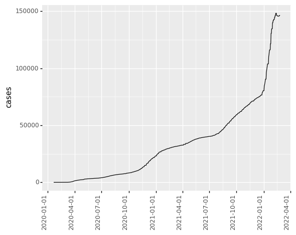
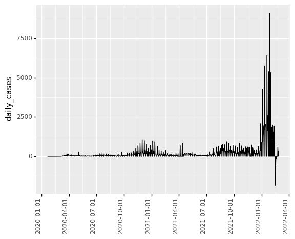

import pandas as pd
import numpy as np
from plotnine import *
---------------------------------------------------------------------------
ModuleNotFoundError Traceback (most recent call last)
/var/folders/kl/h_r05n_j76n32kt0dwy7kynw0000gn/T/ipykernel_5952/3652185203.py in <module>
----> 1 from plotnine import *
ModuleNotFoundError: No module named 'plotnine'
path = '/Users/Kaemyuijang/SCMA248/Data/us-counties.csv'
#df = pd.read_csv(path, parse_dates=True, index_col = 'date')
df = pd.read_csv(path, parse_dates=['date'], index_col = 'date')
df.info()
<class 'pandas.core.frame.DataFrame'>
DatetimeIndex: 2252245 entries, 2020-01-21 to 2022-02-25
Data columns (total 5 columns):
# Column Dtype
--- ------ -----
0 county object
1 state object
2 fips float64
3 cases int64
4 deaths float64
dtypes: float64(2), int64(1), object(2)
memory usage: 103.1+ MB
df.index
DatetimeIndex(['2020-01-21', '2020-01-22', '2020-01-23', '2020-01-24',
'2020-01-24', '2020-01-25', '2020-01-25', '2020-01-25',
'2020-01-26', '2020-01-26',
...
'2022-02-25', '2022-02-25', '2022-02-25', '2022-02-25',
'2022-02-25', '2022-02-25', '2022-02-25', '2022-02-25',
'2022-02-25', '2022-02-25'],
dtype='datetime64[ns]', name='date', length=2252245, freq=None)
df['lag'] = df.cases.shift(1).fillna(0)
df['daily_cases'] = df.cases - df.lag
df['lag_deaths'] = df.deaths.shift(1).fillna(0)
df['daily_deaths'] = df.deaths - df.lag_deaths
df
| county | state | fips | cases | deaths | |
|---|---|---|---|---|---|
| date | |||||
| 2020-01-21 | Snohomish | Washington | 53061.0 | 1 | 0.0 |
| 2020-01-22 | Snohomish | Washington | 53061.0 | 1 | 0.0 |
| 2020-01-23 | Snohomish | Washington | 53061.0 | 1 | 0.0 |
| 2020-01-24 | Cook | Illinois | 17031.0 | 1 | 0.0 |
| 2020-01-24 | Snohomish | Washington | 53061.0 | 1 | 0.0 |
| ... | ... | ... | ... | ... | ... |
| 2022-02-25 | Sweetwater | Wyoming | 56037.0 | 10991 | 123.0 |
| 2022-02-25 | Teton | Wyoming | 56039.0 | 9767 | 16.0 |
| 2022-02-25 | Uinta | Wyoming | 56041.0 | 5616 | 36.0 |
| 2022-02-25 | Washakie | Wyoming | 56043.0 | 2336 | 43.0 |
| 2022-02-25 | Weston | Wyoming | 56045.0 | 1541 | 18.0 |
2252245 rows × 5 columns
df_Snohomish = df.query('county == "Snohomish"')
df_Snohomish['lag'] = df_Snohomish.cases.shift(1).fillna(0)
df_Snohomish['daily_cases'] = df_Snohomish.cases - df_Snohomish.lag
(
ggplot(df_Snohomish) + aes(x = df_Snohomish.index, y = 'cases') + geom_line() +
theme(axis_text_x=element_text(rotation=90, hjust=1))
)

<ggplot: (442449161)>
(
ggplot(df_Snohomish) + aes(x = df_Snohomish.index, y = 'daily_cases') + geom_line() +
theme(axis_text_x=element_text(rotation=90, hjust=1))
)

<ggplot: (306320477)>
df_Snohomish
| county | state | fips | cases | deaths | lag | daily_cases | |
|---|---|---|---|---|---|---|---|
| date | |||||||
| 2020-01-21 | Snohomish | Washington | 53061.0 | 1 | 0.0 | 0.0 | 1.0 |
| 2020-01-22 | Snohomish | Washington | 53061.0 | 1 | 0.0 | 1.0 | 0.0 |
| 2020-01-23 | Snohomish | Washington | 53061.0 | 1 | 0.0 | 1.0 | 0.0 |
| 2020-01-24 | Snohomish | Washington | 53061.0 | 1 | 0.0 | 1.0 | 0.0 |
| 2020-01-25 | Snohomish | Washington | 53061.0 | 1 | 0.0 | 1.0 | 0.0 |
| ... | ... | ... | ... | ... | ... | ... | ... |
| 2022-02-21 | Snohomish | Washington | 53061.0 | 145694 | 1034.0 | 145694.0 | 0.0 |
| 2022-02-22 | Snohomish | Washington | 53061.0 | 145694 | 1034.0 | 145694.0 | 0.0 |
| 2022-02-23 | Snohomish | Washington | 53061.0 | 146253 | 1046.0 | 145694.0 | 559.0 |
| 2022-02-24 | Snohomish | Washington | 53061.0 | 146253 | 1046.0 | 146253.0 | 0.0 |
| 2022-02-25 | Snohomish | Washington | 53061.0 | 146553 | 1054.0 | 146253.0 | 300.0 |
767 rows × 7 columns
df_Snohomish.daily_cases[df_Snohomish.daily_cases < 0]
date
2020-03-28 -1.0
2020-06-07 -1.0
2022-02-14 -1870.0
2022-02-16 -499.0
2022-02-18 -159.0
Name: daily_cases, dtype: float64
df_Snohomish.loc['2022-02-01':'2022-02-18']
| county | state | fips | cases | deaths | lag | daily_cases | |
|---|---|---|---|---|---|---|---|
| date | |||||||
| 2022-02-01 | Snohomish | Washington | 53061.0 | 139881 | 948.0 | 139881.0 | 0.0 |
| 2022-02-02 | Snohomish | Washington | 53061.0 | 141729 | 950.0 | 139881.0 | 1848.0 |
| 2022-02-03 | Snohomish | Washington | 53061.0 | 141729 | 950.0 | 141729.0 | 0.0 |
| 2022-02-04 | Snohomish | Washington | 53061.0 | 142779 | 957.0 | 141729.0 | 1050.0 |
| 2022-02-05 | Snohomish | Washington | 53061.0 | 142779 | 957.0 | 142779.0 | 0.0 |
| 2022-02-06 | Snohomish | Washington | 53061.0 | 142779 | 957.0 | 142779.0 | 0.0 |
| 2022-02-07 | Snohomish | Washington | 53061.0 | 144759 | 972.0 | 142779.0 | 1980.0 |
| 2022-02-08 | Snohomish | Washington | 53061.0 | 144759 | 972.0 | 144759.0 | 0.0 |
| 2022-02-09 | Snohomish | Washington | 53061.0 | 146312 | 983.0 | 144759.0 | 1553.0 |
| 2022-02-10 | Snohomish | Washington | 53061.0 | 146312 | 983.0 | 146312.0 | 0.0 |
| 2022-02-11 | Snohomish | Washington | 53061.0 | 148222 | 999.0 | 146312.0 | 1910.0 |
| 2022-02-12 | Snohomish | Washington | 53061.0 | 148222 | 999.0 | 148222.0 | 0.0 |
| 2022-02-13 | Snohomish | Washington | 53061.0 | 148222 | 999.0 | 148222.0 | 0.0 |
| 2022-02-14 | Snohomish | Washington | 53061.0 | 146352 | 1006.0 | 148222.0 | -1870.0 |
| 2022-02-15 | Snohomish | Washington | 53061.0 | 146352 | 1006.0 | 146352.0 | 0.0 |
| 2022-02-16 | Snohomish | Washington | 53061.0 | 145853 | 1018.0 | 146352.0 | -499.0 |
| 2022-02-17 | Snohomish | Washington | 53061.0 | 145853 | 1018.0 | 145853.0 | 0.0 |
| 2022-02-18 | Snohomish | Washington | 53061.0 | 145694 | 1034.0 | 145853.0 | -159.0 |
df.query('state=="Washington"').head(20)
| date | county | state | fips | cases | deaths | |
|---|---|---|---|---|---|---|
| 0 | 2020-01-21 | Snohomish | Washington | 53061.0 | 1 | 0.0 |
| 1 | 2020-01-22 | Snohomish | Washington | 53061.0 | 1 | 0.0 |
| 2 | 2020-01-23 | Snohomish | Washington | 53061.0 | 1 | 0.0 |
| 4 | 2020-01-24 | Snohomish | Washington | 53061.0 | 1 | 0.0 |
| 7 | 2020-01-25 | Snohomish | Washington | 53061.0 | 1 | 0.0 |
| 12 | 2020-01-26 | Snohomish | Washington | 53061.0 | 1 | 0.0 |
| 17 | 2020-01-27 | Snohomish | Washington | 53061.0 | 1 | 0.0 |
| 22 | 2020-01-28 | Snohomish | Washington | 53061.0 | 1 | 0.0 |
| 27 | 2020-01-29 | Snohomish | Washington | 53061.0 | 1 | 0.0 |
| 32 | 2020-01-30 | Snohomish | Washington | 53061.0 | 1 | 0.0 |
| 38 | 2020-01-31 | Snohomish | Washington | 53061.0 | 1 | 0.0 |
| 45 | 2020-02-01 | Snohomish | Washington | 53061.0 | 1 | 0.0 |
| 53 | 2020-02-02 | Snohomish | Washington | 53061.0 | 1 | 0.0 |
| 61 | 2020-02-03 | Snohomish | Washington | 53061.0 | 1 | 0.0 |
| 69 | 2020-02-04 | Snohomish | Washington | 53061.0 | 1 | 0.0 |
| 77 | 2020-02-05 | Snohomish | Washington | 53061.0 | 1 | 0.0 |
| 86 | 2020-02-06 | Snohomish | Washington | 53061.0 | 1 | 0.0 |
| 95 | 2020-02-07 | Snohomish | Washington | 53061.0 | 1 | 0.0 |
| 104 | 2020-02-08 | Snohomish | Washington | 53061.0 | 1 | 0.0 |
| 113 | 2020-02-09 | Snohomish | Washington | 53061.0 | 1 | 0.0 |
df.groupby('county')
df.info()
<class 'pandas.core.frame.DataFrame'>
DatetimeIndex: 2252245 entries, 2020-01-21 to 2022-02-25
Data columns (total 5 columns):
# Column Dtype
--- ------ -----
0 county object
1 state object
2 fips float64
3 cases int64
4 deaths float64
dtypes: float64(2), int64(1), object(2)
memory usage: 103.1+ MB
path = '/Users/Kaemyuijang/SCMA248/Data/us-counties.csv'
#df = pd.read_csv(path, parse_dates=True, index_col = 'date')
df = pd.read_csv(path, parse_dates=['date'])
df_Snohomish = df.query('county == "Snohomish"')
df_Snohomish['lag'] = df_Snohomish.cases.shift(1).fillna(0)
df_Snohomish['daily_cases'] = df_Snohomish.cases - df_Snohomish.lag
print(df)
df_Snohomish
date county state fips cases deaths
0 2020-01-21 Snohomish Washington 53061.0 1 0.0
1 2020-01-22 Snohomish Washington 53061.0 1 0.0
2 2020-01-23 Snohomish Washington 53061.0 1 0.0
3 2020-01-24 Cook Illinois 17031.0 1 0.0
4 2020-01-24 Snohomish Washington 53061.0 1 0.0
... ... ... ... ... ... ...
2252240 2022-02-25 Sweetwater Wyoming 56037.0 10991 123.0
2252241 2022-02-25 Teton Wyoming 56039.0 9767 16.0
2252242 2022-02-25 Uinta Wyoming 56041.0 5616 36.0
2252243 2022-02-25 Washakie Wyoming 56043.0 2336 43.0
2252244 2022-02-25 Weston Wyoming 56045.0 1541 18.0
[2252245 rows x 6 columns]
| date | county | state | fips | cases | deaths | lag | daily_cases | |
|---|---|---|---|---|---|---|---|---|
| 0 | 2020-01-21 | Snohomish | Washington | 53061.0 | 1 | 0.0 | 0.0 | 1.0 |
| 1 | 2020-01-22 | Snohomish | Washington | 53061.0 | 1 | 0.0 | 1.0 | 0.0 |
| 2 | 2020-01-23 | Snohomish | Washington | 53061.0 | 1 | 0.0 | 1.0 | 0.0 |
| 4 | 2020-01-24 | Snohomish | Washington | 53061.0 | 1 | 0.0 | 1.0 | 0.0 |
| 7 | 2020-01-25 | Snohomish | Washington | 53061.0 | 1 | 0.0 | 1.0 | 0.0 |
| ... | ... | ... | ... | ... | ... | ... | ... | ... |
| 2239078 | 2022-02-21 | Snohomish | Washington | 53061.0 | 145694 | 1034.0 | 145694.0 | 0.0 |
| 2242330 | 2022-02-22 | Snohomish | Washington | 53061.0 | 145694 | 1034.0 | 145694.0 | 0.0 |
| 2245582 | 2022-02-23 | Snohomish | Washington | 53061.0 | 146253 | 1046.0 | 145694.0 | 559.0 |
| 2248834 | 2022-02-24 | Snohomish | Washington | 53061.0 | 146253 | 1046.0 | 146253.0 | 0.0 |
| 2252086 | 2022-02-25 | Snohomish | Washington | 53061.0 | 146553 | 1054.0 | 146253.0 | 300.0 |
767 rows × 8 columns
pd_merge = pd.merge(df,df_Snohomish, how = 'left', on = ['date','county'])
pd_merge.query('county == "Snohomish"')
| date | county | state_x | fips_x | cases_x | deaths_x | state_y | fips_y | cases_y | deaths_y | lag | daily_cases | |
|---|---|---|---|---|---|---|---|---|---|---|---|---|
| 0 | 2020-01-21 | Snohomish | Washington | 53061.0 | 1 | 0.0 | Washington | 53061.0 | 1.0 | 0.0 | 0.0 | 1.0 |
| 1 | 2020-01-22 | Snohomish | Washington | 53061.0 | 1 | 0.0 | Washington | 53061.0 | 1.0 | 0.0 | 1.0 | 0.0 |
| 2 | 2020-01-23 | Snohomish | Washington | 53061.0 | 1 | 0.0 | Washington | 53061.0 | 1.0 | 0.0 | 1.0 | 0.0 |
| 4 | 2020-01-24 | Snohomish | Washington | 53061.0 | 1 | 0.0 | Washington | 53061.0 | 1.0 | 0.0 | 1.0 | 0.0 |
| 7 | 2020-01-25 | Snohomish | Washington | 53061.0 | 1 | 0.0 | Washington | 53061.0 | 1.0 | 0.0 | 1.0 | 0.0 |
| ... | ... | ... | ... | ... | ... | ... | ... | ... | ... | ... | ... | ... |
| 2239078 | 2022-02-21 | Snohomish | Washington | 53061.0 | 145694 | 1034.0 | Washington | 53061.0 | 145694.0 | 1034.0 | 145694.0 | 0.0 |
| 2242330 | 2022-02-22 | Snohomish | Washington | 53061.0 | 145694 | 1034.0 | Washington | 53061.0 | 145694.0 | 1034.0 | 145694.0 | 0.0 |
| 2245582 | 2022-02-23 | Snohomish | Washington | 53061.0 | 146253 | 1046.0 | Washington | 53061.0 | 146253.0 | 1046.0 | 145694.0 | 559.0 |
| 2248834 | 2022-02-24 | Snohomish | Washington | 53061.0 | 146253 | 1046.0 | Washington | 53061.0 | 146253.0 | 1046.0 | 146253.0 | 0.0 |
| 2252086 | 2022-02-25 | Snohomish | Washington | 53061.0 | 146553 | 1054.0 | Washington | 53061.0 | 146553.0 | 1054.0 | 146253.0 | 300.0 |
767 rows × 12 columns
%matplotlib inline
import matplotlib.pyplot as plt
df = pd.read_csv(path, parse_dates=['date'], index_col = 'date')
df = df.query('county in ["Snohomish","Cook"]')
#df = df.query('county in ["Snohomish"]')
df.loc['2022-02-01':'2022-02-18']
| county | state | fips | cases | deaths | |
|---|---|---|---|---|---|
| date | |||||
| 2022-02-01 | Cook | Georgia | 13075.0 | 4744 | 66.0 |
| 2022-02-01 | Cook | Illinois | 17031.0 | 1082395 | 13970.0 |
| 2022-02-01 | Cook | Minnesota | 27031.0 | 507 | 2.0 |
| 2022-02-01 | Snohomish | Washington | 53061.0 | 139881 | 948.0 |
| 2022-02-02 | Cook | Georgia | 13075.0 | 4764 | 66.0 |
| ... | ... | ... | ... | ... | ... |
| 2022-02-17 | Snohomish | Washington | 53061.0 | 145853 | 1018.0 |
| 2022-02-18 | Cook | Georgia | 13075.0 | 4855 | 68.0 |
| 2022-02-18 | Cook | Illinois | 17031.0 | 1105263 | 14439.0 |
| 2022-02-18 | Cook | Minnesota | 27031.0 | 533 | 4.0 |
| 2022-02-18 | Snohomish | Washington | 53061.0 | 145694 | 1034.0 |
72 rows × 5 columns
# https://stackoverflow.com/questions/20625582/how-to-deal-with-settingwithcopywarning-in-pandas
pd.options.mode.chained_assignment = None
df_new = pd.DataFrame()
for id in df['fips'].unique():
print(id)
temp = df.query('fips == @id')
temp['lag'] = temp.cases.shift(1).fillna(0)
temp['daily_cases'] = temp.cases - temp.lag
temp.drop(columns=['lag'], inplace = True)
print(temp)
plt.plot(temp.index,temp.daily_cases)
#print(temp.query('county == @ct'))
#df_new = pd.concat([df_new,temp])
#print(temp)
#df = pd.merge(df,temp, how = 'left', on = ['date','county','state','fips','cases','deaths'])
#df.drop(columns=['lag'], inplace = True)
#print(df.columns)
53061.0
county state fips cases deaths daily_cases
date
2020-01-21 Snohomish Washington 53061.0 1 0.0 1.0
2020-01-22 Snohomish Washington 53061.0 1 0.0 0.0
2020-01-23 Snohomish Washington 53061.0 1 0.0 0.0
2020-01-24 Snohomish Washington 53061.0 1 0.0 0.0
2020-01-25 Snohomish Washington 53061.0 1 0.0 0.0
... ... ... ... ... ... ...
2022-02-21 Snohomish Washington 53061.0 145694 1034.0 0.0
2022-02-22 Snohomish Washington 53061.0 145694 1034.0 0.0
2022-02-23 Snohomish Washington 53061.0 146253 1046.0 559.0
2022-02-24 Snohomish Washington 53061.0 146253 1046.0 0.0
2022-02-25 Snohomish Washington 53061.0 146553 1054.0 300.0
[767 rows x 6 columns]
17031.0
county state fips cases deaths daily_cases
date
2020-01-24 Cook Illinois 17031.0 1 0.0 1.0
2020-01-25 Cook Illinois 17031.0 1 0.0 0.0
2020-01-26 Cook Illinois 17031.0 1 0.0 0.0
2020-01-27 Cook Illinois 17031.0 1 0.0 0.0
2020-01-28 Cook Illinois 17031.0 1 0.0 0.0
... ... ... ... ... ... ...
2022-02-21 Cook Illinois 17031.0 1105263 14439.0 0.0
2022-02-22 Cook Illinois 17031.0 1107288 14491.0 2025.0
2022-02-23 Cook Illinois 17031.0 1108068 14535.0 780.0
2022-02-24 Cook Illinois 17031.0 1108582 14552.0 514.0
2022-02-25 Cook Illinois 17031.0 1109348 14571.0 766.0
[764 rows x 6 columns]
13075.0
county state fips cases deaths daily_cases
date
2020-03-30 Cook Georgia 13075.0 1 0.0 1.0
2020-03-31 Cook Georgia 13075.0 1 0.0 0.0
2020-04-01 Cook Georgia 13075.0 1 0.0 0.0
2020-04-02 Cook Georgia 13075.0 1 0.0 0.0
2020-04-03 Cook Georgia 13075.0 1 0.0 0.0
... ... ... ... ... ... ...
2022-02-21 Cook Georgia 13075.0 4859 69.0 4.0
2022-02-22 Cook Georgia 13075.0 4862 69.0 3.0
2022-02-23 Cook Georgia 13075.0 4865 69.0 3.0
2022-02-24 Cook Georgia 13075.0 4867 69.0 2.0
2022-02-25 Cook Georgia 13075.0 4871 69.0 4.0
[698 rows x 6 columns]
27031.0
county state fips cases deaths daily_cases
date
2020-06-13 Cook Minnesota 27031.0 1 0.0 1.0
2020-06-14 Cook Minnesota 27031.0 1 0.0 0.0
2020-06-15 Cook Minnesota 27031.0 1 0.0 0.0
2020-06-16 Cook Minnesota 27031.0 1 0.0 0.0
2020-06-17 Cook Minnesota 27031.0 1 0.0 0.0
... ... ... ... ... ... ...
2022-02-21 Cook Minnesota 27031.0 533 4.0 0.0
2022-02-22 Cook Minnesota 27031.0 533 4.0 0.0
2022-02-23 Cook Minnesota 27031.0 535 4.0 2.0
2022-02-24 Cook Minnesota 27031.0 538 4.0 3.0
2022-02-25 Cook Minnesota 27031.0 539 4.0 1.0
[623 rows x 6 columns]

df_new = pd.DataFrame()
for id in df['fips'].unique():
print(id)
temp = df.query('fips == @id')
temp['lag'] = temp.cases.shift(1).fillna(0)
temp['daily_cases'] = temp.cases - temp.lag
temp.drop(columns=['lag'], inplace = True)
rolling = temp.daily_cases.rolling(7, center=True)
#print(rolling.mean().shape)
#print(temp.shape)
temp['rolling_mean'] = rolling.mean()
#print(temp)
df_new = pd.concat([df_new,temp])
#print(temp)
#df = pd.merge(df,temp, how = 'left', on = ['date','county','state','fips','cases','deaths'])
#df.drop(columns=['lag'], inplace = True)
#print(df.columns)
(
ggplot(df_new) + aes(x = df_new.index, y = 'daily_cases') + geom_line() +
theme(axis_text_x=element_text(rotation=90, hjust=1)) +
facet_wrap('fips')
)
53061.0
17031.0
13075.0
27031.0
<ggplot: (313508713)>
df_new.loc[df_new['fips'] == 13075.]['2022-02-01':'2022-02-18']
| county | state | fips | cases | deaths | daily_cases | rolling_mean | |
|---|---|---|---|---|---|---|---|
| date | |||||||
| 2022-02-01 | Cook | Georgia | 13075.0 | 4744 | 66.0 | 25.0 | 16.428571 |
| 2022-02-02 | Cook | Georgia | 13075.0 | 4764 | 66.0 | 20.0 | 16.428571 |
| 2022-02-03 | Cook | Georgia | 13075.0 | 4778 | 66.0 | 14.0 | 16.428571 |
| 2022-02-04 | Cook | Georgia | 13075.0 | 4787 | 66.0 | 9.0 | 13.285714 |
| 2022-02-05 | Cook | Georgia | 13075.0 | 4787 | 66.0 | 0.0 | 11.285714 |
| 2022-02-06 | Cook | Georgia | 13075.0 | 4787 | 66.0 | 0.0 | 9.142857 |
| 2022-02-07 | Cook | Georgia | 13075.0 | 4812 | 67.0 | 25.0 | 8.428571 |
| 2022-02-08 | Cook | Georgia | 13075.0 | 4823 | 67.0 | 11.0 | 8.142857 |
| 2022-02-09 | Cook | Georgia | 13075.0 | 4828 | 67.0 | 5.0 | 8.142857 |
| 2022-02-10 | Cook | Georgia | 13075.0 | 4837 | 67.0 | 9.0 | 8.142857 |
| 2022-02-11 | Cook | Georgia | 13075.0 | 4844 | 67.0 | 7.0 | 5.571429 |
| 2022-02-12 | Cook | Georgia | 13075.0 | 4844 | 67.0 | 0.0 | 4.142857 |
| 2022-02-13 | Cook | Georgia | 13075.0 | 4844 | 67.0 | 0.0 | 4.000000 |
| 2022-02-14 | Cook | Georgia | 13075.0 | 4851 | 68.0 | 7.0 | 2.714286 |
| 2022-02-15 | Cook | Georgia | 13075.0 | 4852 | 68.0 | 1.0 | 1.571429 |
| 2022-02-16 | Cook | Georgia | 13075.0 | 4856 | 68.0 | 4.0 | 1.571429 |
| 2022-02-17 | Cook | Georgia | 13075.0 | 4856 | 68.0 | 0.0 | 1.571429 |
| 2022-02-18 | Cook | Georgia | 13075.0 | 4855 | 68.0 | -1.0 | 1.142857 |
#df_new13075 = df_new.loc[df_new['fips'] == 13075.]['2021-07-01':'2022-02-18']
df_new13075 = df_new.query('fips == 13075.')
print(df_new13075.head(10))
(
ggplot(df_new13075.query('fips == 13075.')) +
geom_line(aes(x = df_new13075.index, y = 'daily_cases'), alpha = 0.5) +
geom_line(aes(x = df_new13075.index, y = 'rolling_mean'), color='red',alpha=0.8) +
theme(axis_text_x=element_text(rotation=90, hjust=1))
)
county state fips cases deaths daily_cases rolling_mean
date
2020-03-30 Cook Georgia 13075.0 1 0.0 1.0 NaN
2020-03-31 Cook Georgia 13075.0 1 0.0 0.0 NaN
2020-04-01 Cook Georgia 13075.0 1 0.0 0.0 NaN
2020-04-02 Cook Georgia 13075.0 1 0.0 0.0 0.142857
2020-04-03 Cook Georgia 13075.0 1 0.0 0.0 0.142857
2020-04-04 Cook Georgia 13075.0 1 0.0 0.0 0.428571
2020-04-05 Cook Georgia 13075.0 1 0.0 0.0 0.428571
2020-04-06 Cook Georgia 13075.0 2 0.0 1.0 0.714286
2020-04-07 Cook Georgia 13075.0 4 0.0 2.0 0.714286
2020-04-08 Cook Georgia 13075.0 4 0.0 0.0 0.714286
/Users/Kaemyuijang/opt/anaconda3/lib/python3.7/site-packages/plotnine/geoms/geom_path.py:75: PlotnineWarning: geom_path: Removed 6 rows containing missing values.
<ggplot: (313296677)>
df_new17031 = df_new.query('fips == 17031.')
ggplot(df_new17031.query('fips == 17031.')) + aes(x = df_new17031.index, y = 'daily_cases') + geom_line()

<ggplot: (384735453)>
df = pd.read_csv(path, parse_dates=['date'], index_col = 'date')
df = df.query('state in ["Washington"]')
#df = df.query('county in ["Snohomish"]')
print(df.county.unique())
['Snohomish' 'Spokane' 'King' 'Walla Walla' 'Chelan' 'Clark' 'Jefferson'
'Pierce' 'Kittitas' 'Kitsap' 'Skagit' 'Whatcom' 'Island' 'Thurston'
'Columbia' 'Grays Harbor' 'Yakima' 'Grant' 'Klickitat' 'Lewis' 'Lincoln'
'Franklin' 'Mason' 'Benton' 'Clallam' 'Cowlitz' 'San Juan' 'Stevens'
'Whitman' 'Adams' 'Douglas' 'Unknown' 'Ferry' 'Okanogan' 'Skamania'
'Pend Oreille' 'Asotin' 'Wahkiakum' 'Pacific' 'Garfield']
df_new = pd.DataFrame()
for id in df['fips'].unique():
print(id)
temp = df.query('fips == @id')
temp['lag'] = temp.cases.shift(1).fillna(0)
temp['daily_cases'] = temp.cases - temp.lag
temp.drop(columns=['lag'], inplace = True)
rolling = temp.daily_cases.rolling(7, center=True)
#print(rolling.mean().shape)
#print(temp.shape)
temp['rolling_mean'] = rolling.mean()
#print(temp)
df_new = pd.concat([df_new,temp])
#print(temp)
#df = pd.merge(df,temp, how = 'left', on = ['date','county','state','fips','cases','deaths'])
#df.drop(columns=['lag'], inplace = True)
#print(df.columns)
(
ggplot(df_new) + aes(x = df_new.index, y = 'daily_cases') + geom_line() +
theme(axis_text_x=element_text(rotation=90, hjust=1)) +
facet_wrap('fips')
)
53061.0
53063.0
53033.0
53071.0
53007.0
53011.0
53031.0
53053.0
53037.0
53035.0
53057.0
53073.0
53029.0
53067.0
53013.0
53027.0
53077.0
53025.0
53039.0
53041.0
53043.0
53021.0
53045.0
53005.0
53009.0
53015.0
53055.0
53065.0
53075.0
53001.0
53017.0
nan
53019.0
53047.0
53059.0
53051.0
53003.0
53069.0
53049.0
53023.0
<ggplot: (313502521)>
fips_id = 53023.0
df_subset = df_new.query('fips==@fips_id')
(
ggplot(df_subset) + geom_line(aes(x = df_subset.index, y = 'daily_cases'), alpha = 0.3) +
geom_line(aes(x = df_subset.index, y = 'rolling_mean'),color='red', alpha = 0.8) +
theme(axis_text_x=element_text(rotation=90, hjust=1))
)
/Users/Kaemyuijang/opt/anaconda3/lib/python3.7/site-packages/plotnine/geoms/geom_path.py:75: PlotnineWarning: geom_path: Removed 6 rows containing missing values.
<ggplot: (314210065)>
df_new = pd.DataFrame()
for ct in df['county'].unique():
print(ct)
temp = df.query('county == @ct')
temp['lag'] = temp.cases.shift(1).fillna(0)
temp['daily_cases'] = temp.cases - temp.lag
temp.drop(columns=['lag'], inplace = True)
print(temp)
plt.plot(temp.index,temp.daily_cases)
#print(temp.query('county == @ct'))
#df_new = pd.concat([df_new,temp])
#print(temp)
#df = pd.merge(df,temp, how = 'left', on = ['date','county','state','fips','cases','deaths'])
#df.drop(columns=['lag'], inplace = True)
#print(df.columns)
Snohomish
county state fips cases deaths daily_cases
date
2020-01-21 Snohomish Washington 53061.0 1 0.0 1.0
2020-01-22 Snohomish Washington 53061.0 1 0.0 0.0
2020-01-23 Snohomish Washington 53061.0 1 0.0 0.0
2020-01-24 Snohomish Washington 53061.0 1 0.0 0.0
2020-01-25 Snohomish Washington 53061.0 1 0.0 0.0
... ... ... ... ... ... ...
2022-02-21 Snohomish Washington 53061.0 145694 1034.0 0.0
2022-02-22 Snohomish Washington 53061.0 145694 1034.0 0.0
2022-02-23 Snohomish Washington 53061.0 146253 1046.0 559.0
2022-02-24 Snohomish Washington 53061.0 146253 1046.0 0.0
2022-02-25 Snohomish Washington 53061.0 146553 1054.0 300.0
[767 rows x 6 columns]
test = df_new[df_new['county']=="Cook"]
print(test)
(
ggplot(test) + aes(x = test.index, y = 'daily_cases') + geom_point() +
theme(axis_text_x=element_text(rotation=90, hjust=1))
)
county state fips cases deaths daily_cases
date
2020-01-24 Cook Illinois 17031.0 1 0.0 1.0
2020-01-25 Cook Illinois 17031.0 1 0.0 0.0
2020-01-26 Cook Illinois 17031.0 1 0.0 0.0
2020-01-27 Cook Illinois 17031.0 1 0.0 0.0
2020-01-28 Cook Illinois 17031.0 1 0.0 0.0
... ... ... ... ... ... ...
2022-02-24 Cook Illinois 17031.0 1108582 14552.0 1103715.0
2022-02-24 Cook Minnesota 27031.0 538 4.0 -1108044.0
2022-02-25 Cook Georgia 13075.0 4871 69.0 4333.0
2022-02-25 Cook Illinois 17031.0 1109348 14571.0 1104477.0
2022-02-25 Cook Minnesota 27031.0 539 4.0 -1108809.0
[2085 rows x 6 columns]
<ggplot: (307051573)>
df
| county | state | fips | cases | deaths | daily_cases_x | daily_cases_y | |
|---|---|---|---|---|---|---|---|
| date | |||||||
| 2020-01-21 | Snohomish | Washington | 53061.0 | 1 | 0.0 | NaN | NaN |
| 2020-01-22 | Snohomish | Washington | 53061.0 | 1 | 0.0 | NaN | NaN |
| 2020-01-23 | Snohomish | Washington | 53061.0 | 1 | 0.0 | NaN | NaN |
| 2020-01-24 | Cook | Illinois | 17031.0 | 1 | 0.0 | 1.0 | 1.0 |
| 2020-01-24 | Snohomish | Washington | 53061.0 | 1 | 0.0 | NaN | NaN |
| ... | ... | ... | ... | ... | ... | ... | ... |
| 2022-02-24 | Snohomish | Washington | 53061.0 | 146253 | 1046.0 | NaN | NaN |
| 2022-02-25 | Cook | Georgia | 13075.0 | 4871 | 69.0 | 4333.0 | 4333.0 |
| 2022-02-25 | Cook | Illinois | 17031.0 | 1109348 | 14571.0 | 1104477.0 | 1104477.0 |
| 2022-02-25 | Cook | Minnesota | 27031.0 | 539 | 4.0 | -1108809.0 | -1108809.0 |
| 2022-02-25 | Snohomish | Washington | 53061.0 | 146553 | 1054.0 | NaN | NaN |
2852 rows × 7 columns
pd_merge
| date | county | state_x | fips_x | cases_x | deaths_x | state_y | fips_y | cases_y | deaths_y | lag | daily_cases | |
|---|---|---|---|---|---|---|---|---|---|---|---|---|
| 0 | 2020-01-21 | Snohomish | Washington | 53061.0 | 1 | 0.0 | NaN | NaN | NaN | NaN | NaN | NaN |
| 1 | 2020-01-22 | Snohomish | Washington | 53061.0 | 1 | 0.0 | NaN | NaN | NaN | NaN | NaN | NaN |
| 2 | 2020-01-23 | Snohomish | Washington | 53061.0 | 1 | 0.0 | NaN | NaN | NaN | NaN | NaN | NaN |
| 3 | 2020-01-24 | Cook | Illinois | 17031.0 | 1 | 0.0 | Illinois | 17031.0 | 1.0 | 0.0 | 0.0 | 1.0 |
| 4 | 2020-01-24 | Snohomish | Washington | 53061.0 | 1 | 0.0 | NaN | NaN | NaN | NaN | NaN | NaN |
| ... | ... | ... | ... | ... | ... | ... | ... | ... | ... | ... | ... | ... |
| 6735 | 2022-02-25 | Cook | Illinois | 17031.0 | 1109348 | 14571.0 | Minnesota | 27031.0 | 539.0 | 4.0 | 1109348.0 | -1108809.0 |
| 6736 | 2022-02-25 | Cook | Minnesota | 27031.0 | 539 | 4.0 | Georgia | 13075.0 | 4871.0 | 69.0 | 538.0 | 4333.0 |
| 6737 | 2022-02-25 | Cook | Minnesota | 27031.0 | 539 | 4.0 | Illinois | 17031.0 | 1109348.0 | 14571.0 | 4871.0 | 1104477.0 |
| 6738 | 2022-02-25 | Cook | Minnesota | 27031.0 | 539 | 4.0 | Minnesota | 27031.0 | 539.0 | 4.0 | 1109348.0 | -1108809.0 |
| 6739 | 2022-02-25 | Snohomish | Washington | 53061.0 | 146553 | 1054.0 | NaN | NaN | NaN | NaN | NaN | NaN |
6740 rows × 12 columns
df.query('county == @name')
| date | county | state | fips | cases | deaths | |
|---|---|---|---|---|---|---|
| 3 | 2020-01-24 | Cook | Illinois | 17031.0 | 1 | 0.0 |
| 6 | 2020-01-25 | Cook | Illinois | 17031.0 | 1 | 0.0 |
| 11 | 2020-01-26 | Cook | Illinois | 17031.0 | 1 | 0.0 |
| 16 | 2020-01-27 | Cook | Illinois | 17031.0 | 1 | 0.0 |
| 21 | 2020-01-28 | Cook | Illinois | 17031.0 | 1 | 0.0 |
| ... | ... | ... | ... | ... | ... | ... |
| 2246358 | 2022-02-24 | Cook | Illinois | 17031.0 | 1108582 | 14552.0 |
| 2247084 | 2022-02-24 | Cook | Minnesota | 27031.0 | 538 | 4.0 |
| 2249420 | 2022-02-25 | Cook | Georgia | 13075.0 | 4871 | 69.0 |
| 2249610 | 2022-02-25 | Cook | Illinois | 17031.0 | 1109348 | 14571.0 |
| 2250336 | 2022-02-25 | Cook | Minnesota | 27031.0 | 539 | 4.0 |
2085 rows × 6 columns
df_merged = df
ct = "Cook"
#print(ct)
temp = df_merged.query('county == @name')
#print(temp)
temp['lag'] = temp.cases.shift(1).fillna(0)
temp['daily_cases'] = temp.cases - temp.lag
#print(temp[['county','daily_cases']])
#print(temp['county','daily_cases'])
df_merged = pd.merge(df_merged,temp, how = 'left', on = ['date','county','state','fips','cases','deaths'])
print(df_merged)
county state fips cases deaths lag \
date
2020-01-21 Snohomish Washington 53061.0 1 0.0 NaN
2020-01-22 Snohomish Washington 53061.0 1 0.0 NaN
2020-01-23 Snohomish Washington 53061.0 1 0.0 NaN
2020-01-24 Cook Illinois 17031.0 1 0.0 0.0
2020-01-24 Snohomish Washington 53061.0 1 0.0 NaN
... ... ... ... ... ... ...
2022-02-24 Snohomish Washington 53061.0 146253 1046.0 NaN
2022-02-25 Cook Georgia 13075.0 4871 69.0 538.0
2022-02-25 Cook Illinois 17031.0 1109348 14571.0 4871.0
2022-02-25 Cook Minnesota 27031.0 539 4.0 1109348.0
2022-02-25 Snohomish Washington 53061.0 146553 1054.0 NaN
daily_cases
date
2020-01-21 NaN
2020-01-22 NaN
2020-01-23 NaN
2020-01-24 1.0
2020-01-24 NaN
... ...
2022-02-24 NaN
2022-02-25 4333.0
2022-02-25 1104477.0
2022-02-25 -1108809.0
2022-02-25 NaN
[2852 rows x 7 columns]
temp.head()
| county | state | fips | cases | deaths | lag | daily_cases | |
|---|---|---|---|---|---|---|---|
| date | |||||||
| 2020-01-24 | Cook | Illinois | 17031.0 | 1 | 0.0 | 0.0 | 1.0 |
| 2020-01-25 | Cook | Illinois | 17031.0 | 1 | 0.0 | 1.0 | 0.0 |
| 2020-01-26 | Cook | Illinois | 17031.0 | 1 | 0.0 | 1.0 | 0.0 |
| 2020-01-27 | Cook | Illinois | 17031.0 | 1 | 0.0 | 1.0 | 0.0 |
| 2020-01-28 | Cook | Illinois | 17031.0 | 1 | 0.0 | 1.0 | 0.0 |
pd.merge(df_merged,temp, how = 'left', on = ['date','county','state','fips','cases','deaths'])
| county | state | fips | cases | deaths | lag | daily_cases | |
|---|---|---|---|---|---|---|---|
| date | |||||||
| 2020-01-21 | Snohomish | Washington | 53061.0 | 1 | 0.0 | NaN | NaN |
| 2020-01-22 | Snohomish | Washington | 53061.0 | 1 | 0.0 | NaN | NaN |
| 2020-01-23 | Snohomish | Washington | 53061.0 | 1 | 0.0 | NaN | NaN |
| 2020-01-24 | Cook | Illinois | 17031.0 | 1 | 0.0 | 0.0 | 1.0 |
| 2020-01-24 | Snohomish | Washington | 53061.0 | 1 | 0.0 | NaN | NaN |
| ... | ... | ... | ... | ... | ... | ... | ... |
| 2022-02-24 | Snohomish | Washington | 53061.0 | 146253 | 1046.0 | NaN | NaN |
| 2022-02-25 | Cook | Georgia | 13075.0 | 4871 | 69.0 | 538.0 | 4333.0 |
| 2022-02-25 | Cook | Illinois | 17031.0 | 1109348 | 14571.0 | 4871.0 | 1104477.0 |
| 2022-02-25 | Cook | Minnesota | 27031.0 | 539 | 4.0 | 1109348.0 | -1108809.0 |
| 2022-02-25 | Snohomish | Washington | 53061.0 | 146553 | 1054.0 | NaN | NaN |
2852 rows × 7 columns